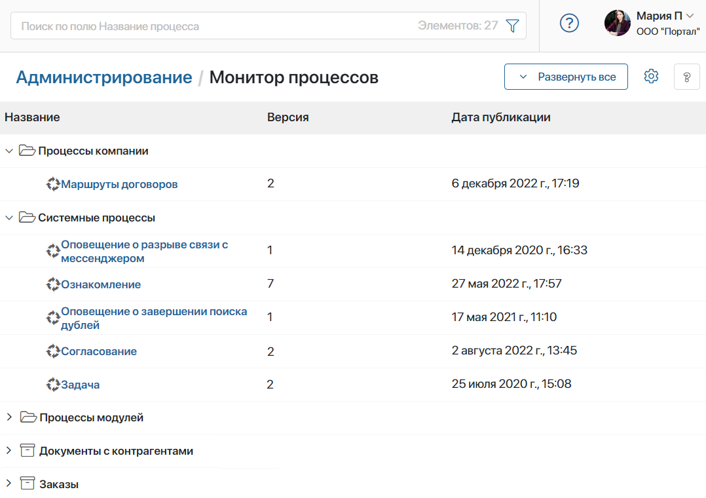
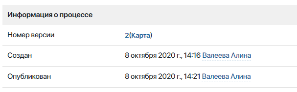
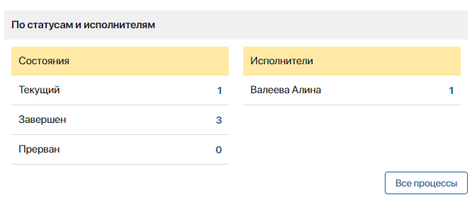
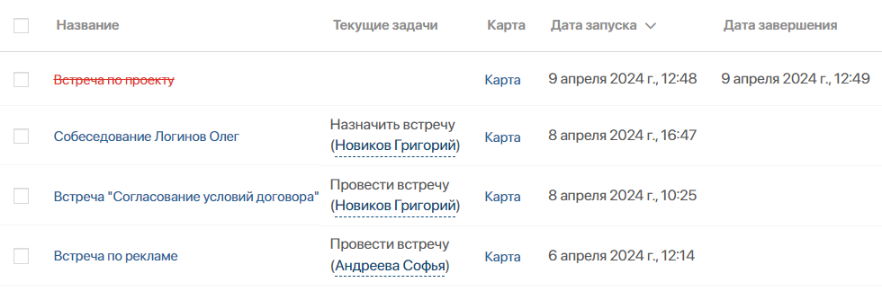
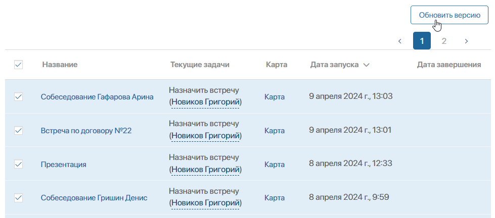

Монитор процессов — это аналитический инструмент для системных администраторов, который позволяет отслеживать состояние процессов в реальном времени.
С помощью монитора вы можете:
- посмотреть статистику по каждому процессу: сколько экземпляров было запущено, завершено или прервано, какая задача выполняется в текущий момент, кто является исполнителем;
- для конкретного экземпляра — просмотреть список текущих операций и их исполонителей, карту, а также даты запуска и завершения действий;
- после публикации новой версии процесса — массово обновить версию для уже запущенных экземпляров;
- прервать выполнение одного или нескольких экземпляров, если обнаружена некорректная работа в их процессе.
начало внимание
Доступ к монитору процессов есть только у пользователей, включённых в группу Администраторы.
конец внимание
Чтобы открыть страницу монитора, перейдите в раздел Администрирование > Монитор процессов.

Монитор позволяет отслеживать следующие бизнес-процессы:
- системные, то есть заданные по умолчанию процессы платформы и используемых системных решений;
- импортированные в составе разделов, модулей и решений, включая бизнес‑решения из каталога ELMA365 Store. Исключением являются процессы модулей, входящих в платное решение, они недоступны на странице монитора;
- созданные пользователями на уровне компании, разделов, приложений и пользовательских модулей.
Чтобы найти нужный процесс, в строке поиска введите название процесса или примените фильтр по основным и системным полям. Также можно использовать EQL-поиск.
В поставке On-Premises строка поиска доступна, если включён фича-флаг enableSearchInProcessMonitor. Подробнее об этом читайте в статьях «Изменение параметров ELMA365 Enterprise» и «Изменение параметров ELMA365 Standard».
Настроить страницу монитора процессов
Вы можете настраивать внешний вид дерева процессов. Для этого в правом верхнем углу страницы используйте опции:
- Развернуть все — открыть все папки, включая вложенные;
- — нажмите, чтобы перейти к следующим действиям:
- Отображать разделы в отдельной папке — объединить процессы по всем разделам в папке Разделы;
- Разворачивать дерево при поиске — включено по умолчанию. Результаты поиска процесса отобразятся в раскрытых папках. В поставке On-Premises опция доступна, если включён фича-флаг для отображения строки поиска;
- Сортировать в алфавитном порядке — эта опция применяется к списку вложенных папок и перечню процессов в них;
- Скрывать пустые папки — не показывать папки, разделы, приложения и модули, которые не содержат процессов.
Страница процесса
Чтобы посмотреть детальную информацию об экземплярах, исполнителях, задачах и т. д., откройте страницу процесса, нажав на его название в списке. Данные на странице сгруппированы в три блока:
Здесь вы найдёте историю версий, карту процесса, дату создания и дату публикации последней версии. Нажав на номер, вы можете посмотреть все комментарии к опубликованным версиям.

В этом блоке представлена информация о состоянии всех когда-либо запущенных экземпляров процесса. В колонке слева показано, сколько экземпляров выполняется в текущий момент, сколько было завершено или прервано.
Нажав на счётчик справа от состояния, вы сможете отфильтровать информацию в таблице, так чтобы в ней отображались только текущие, завершённые или прерванные экземпляры. Чтобы сбросить фильтрацию, нажмите на кнопку Все процессы.
В колонке Исполнители отображается список участников процесса с задачами. Нажав на счётчик задач, вы сможете посмотреть все задачи, назначенные данному сотруднику в рамках всех экземпляров данного процесса.

Названия элементов обозначены цветом в зависимости от статуса экземпляра процесса:
- синий — активные экземпляры;
- серый — прерванные экземпляры;
- красный — экземпляры с ошибкой, а также просроченные задачи.
Названия завершённых и прерванных процессов перечёркнуты.
Экземпляры в таблице можно сортировать по имени, дате запуска и дате завершения. Для этого нажмите на название нужного столбца. Чтобы изменить порядок сортировки на противоположный, нажмите на стрелки рядом с названием.
Чтобы найти нужный экземпляр процесса, воспользуйтесь поиском вверху страницы Монитор процессов.

Нажав на название экземпляра, можно открыть его карточку. В ней содержится вся нужная информация: список задач, их сроки, исполнители, контекстные переменные и карта процесса, а также ссылки на запущенные дочерние и родительские процессы. Подробно про карточку процесса можно прочитать в статье «Карточка экземпляра».
Также в таблице вы можете выполнить массовые действия с экземплярами: обновить версию процесса или прервать выполнение.
Обновить версию процесса в экземплярах
После публикации новой версии процесса можно обновить уже запущенные экземпляры, чтобы они продолжились с последними правками. Для этого:
- В списке экземпляров процесса отметьте те, для которых нужно обновить версию. Вы можете выбрать все экземпляры на странице или все когда‑либо запущенные экземпляры, поставив флажок напротив столбца Название и выбрав нужную опцию.
- Справа над таблицей нажмите кнопку Обновить версию.

- Если вы выбрали все существующие экземпляры, в открывшемся окне подтвердите действие, нажав кнопку Обновить все. Если вы отметили отдельные экземпляры, вы можете обновить или исключить из списка отдельные из них, используя кнопки Обновить и Пропустить. Чтобы обновить версию для всех экземпляров в списке, в левом нижнем углу окна нажмите Обновить все.
После обновления в карту экземпляра будут внесены последние изменения, и ход процесса продолжится согласно актуальной схеме.
Прервать выполнение экземпляров
В случае некорректной настройки процесса можно прервать его запущенные экземпляры. Для этого:
- перейдите в карточку экземпляра и нажмите кнопку Прервать процесс;
- в таблице со списком экземпляров выделите нужные элементы и нажмите кнопку Прервать.
Все участники прерванного экземпляра процесса получат уведомление об этом в #ленту.